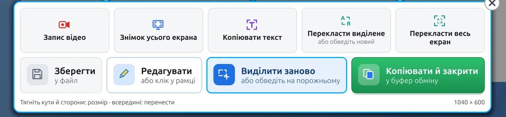
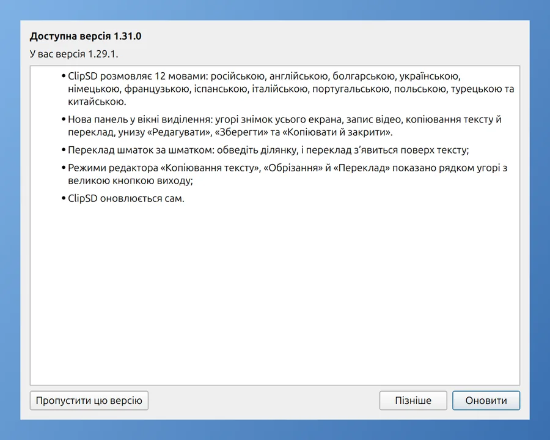

Історія версій
Версія 1.31.0
вийшла
- ClipSD розмовляє 12 мовами: російською, англійською, болгарською, українською, німецькою, французькою, іспанською, італійською, португальською, польською, турецькою та китайською. Мова змінюється одразу, без перезапуску: меню значка біля годинника, глобус у редакторі, перший крок ознайомлення або налаштування.

- Нова панель у вікні виділення: угорі знімок усього екрана, запис відео, копіювання тексту й переклад, унизу «Редагувати», «Зберегти» та «Копіювати й закрити».

- Переклад шматок за шматком: обведіть ділянку, і переклад з’явиться поверх тексту; обведіть наступну, і текст у ній теж буде перекладено. Esc завершує режим.

- Режими редактора «Копіювання тексту», «Обрізання» й «Переклад» показано рядком угорі з великою кнопкою виходу; Esc повертає попередній інструмент.

- ClipSD оновлюється сам. Раз на добу перевіряє, чи є нова версія, і пропонує «Оновити», «Пізніше» або «Пропустити цю версію». Перевірити одразу: меню значка, «Перевірити оновлення». Оновлення перевіряється цифровим підписом; якщо нова версія не запустилася, повертається попередня.
